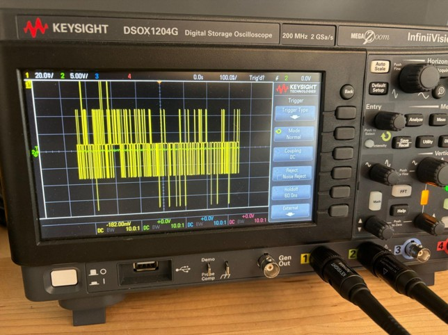
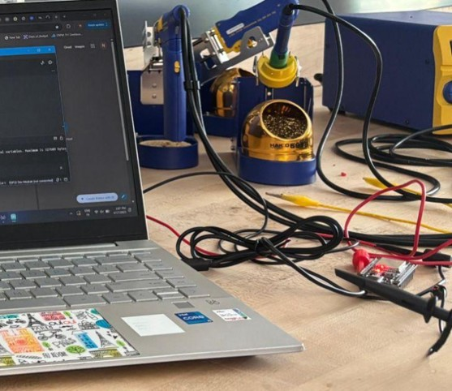

Correlation Power Analysis on STM32F4
Cracking a crypto key by watching how much power a chip uses — that was the idea.
I ran a Python-based Correlation Power Analysis attack on AES-128 traces from an STM32F4
and recovered the full key with fewer than 5,000 traces.
Project Github Repository

Power trace analysis on Oscilloscope

Power trace analysis setup on ESP32
What's the Deal?
AES-128 is mathematically rock-solid, but the hardware running it tells a different story. Every time the chip encrypts a block, its power draw fluctuates in patterns that correlate with the secret key bytes being processed. Correlation Power Analysis exploits exactly this, using statistics to peel back the key, one byte at a time, from nothing but power consumption measurements.
How I Built It
I worked with an amazing teammate named Zachary on this one. We attempted to collect the traces directly from the ESP32 hardware.
The ESP32 was connected in parallel to an oscilloscope to measure the power consumption fluctuations during encryption.
Unfortunately, a large dataset would be required to break AES (approximately 10 hours worth of precise trace measurements).
Instead, we used an open-source dataset
(STM32F4 D1, Dataset Github)
What made this especially interesting was extending the attack to second-order masked AES. Masking is a common countermeasure, it splits sensitive values into random shares but with the right preprocessing (combining traces from different points in time), I was able to uncover weaknesses even in the protected implementation. The full analysis is reproducible and documented.
Tech Stack
Demo Video

Results
- Full AES-128 key recovery with fewer than 5,000 power traces
- Extended to second-order masked AES, uncovering weaknesses in countermeasures
- Reproducible analysis pipeline published for further research
What I Took Away
This project hammered home that "mathematically secure" and "physically secure" are two very different things. It also sharpened my signal-processing chops and gave me a deep appreciation for why hardware countermeasures like masking and shuffling exist and why they're still not bulletproof.